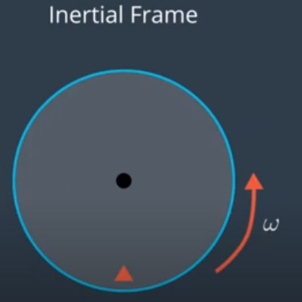
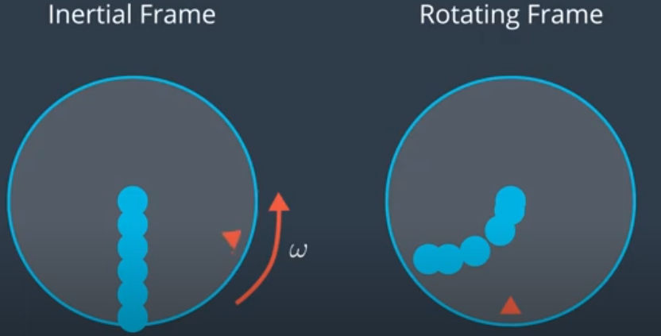

Consider a big spinning disk (like a merry-go-round) rotating with some angular velocity $\omega$. Imagine someone, standing in the middle of the disc, tried to throw a ball at the triangular target shown in the image.
The ball doesn't care that the disk is rotating and it moves in a straight line. By the time it gets to the edge of the disk, the target will have rotated far away from where it originally was. Here, the motion is observed from the world frame, which is an inertial frame. In this frame,
